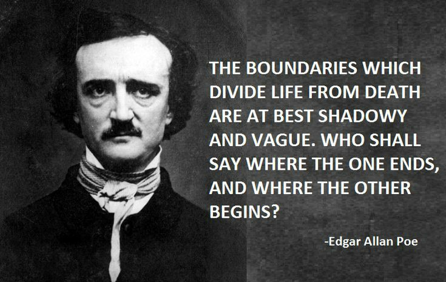

Shadow (A Parable)
Edgar Allan Poe

Part of the first page of my comic book "Shadow" -Story by Edgar Allan Poe, original design by mariavarg(img1), copyright©: mariavarg
Click on image to enlarge
Before “The Masque of the Red Death,” Poe had begun contemplating its principle themes: denial of death, libertine seclusion, and the illimitable dominion of the reaper. In “Shadow – A Parable” these ideas are consolidated into a nearly Homeric meditation on death’s invincibility. The story of a mere moment, “Shadow” peeks into the room where seven men are nervously peering into their own reflections while a gruesome plague ravishes the streets beyond their fastened brass door. Poe, who experienced the ghastliness of cholera in 1831, knew the terror it incited when entire dining rooms filled with uproarious revelers might that same hour be discovered by servants filled with shriveling mummies hemorrhaging watery waste and vomit, death having thrust itself leeringly into their wine-flushed faces. Unlike the cholera-inspired humoresque “The Sphinx,” which pokes fun at the extreme conclusions death can cause us to arrive at, “Shadow” plunges its fingers into the recesses of human consciousness, extracting the phantoms we deny and repress, phantoms which we hopelessly attempt to avoid.
SUMMARY:
The story – set in the Ancient Mediterranean – is told by Oinos (the Greek word for wine), who begins by saying that the year in which his story takes place was one filled with strange omens and widespread terror (namely, a plague). He and the last of his friends, seven men, cordon themselves off in a great hall in the city of Ptolemais (presumably the Phoenician port of the same name) where they wait for death. Gloom and depression hangs heavy over them, and although they have light from seven lamps in the room, it seems dark and shadowy. They are seated at a round table of polished ebony, staring at their own reflections in the black surface, and are shielded from the outside world by heavy black drapes over the windows, while the sole door to the outside – a massive portal made of brass – is locked. Despite their fear and dread, they drink and laugh and become hysterical. But one of them is not so enlivened: their eighth friend, “young Zoilus” (the name of a Greek critic known for calling out hypocrisy) whose death they are mourning. He is shrouded and laid out before them, and seems to mock their feigned merriment. Indeed, the laughter fades away at length, and they steadily realize that there is a ninth figure in the room with them: something dark and shadowy has just slipped from behind the black curtains and is prowling the room in their midst – “but it was the shadow neither of man or God, nor of any familiar thing.” It belongs to no mythology or religion. Eventually its shadow covers the bronze portal, blocking their escape, and – due to Zoilus’ position, up against the door – it appears to emanate from his corpse. Having seen it slip out into the room, the seven men turn back to their reflections and avoid its gaze. Finally, Oinos, speaking in low tones, demands to know the shadow’s name and origin. It boldly responds: "I am SHADOW, and my dwelling is near to the Catacombs of Ptolemais, and hard by those dim plains of Helusion which border upon the foul Charonian canal” (all references to death and the afterlife). The seven men bolt from their chairs in horror: the words that the Shadow spoke to them did not come from a single voice, but from thousands: “varuing in their cadences from syllable to syllable … in the well-remembered and familiar accents of many thousand departed friends.” And so the parable ends.(Michael Kellermeyer)
(img1)
Click on image to enlarge